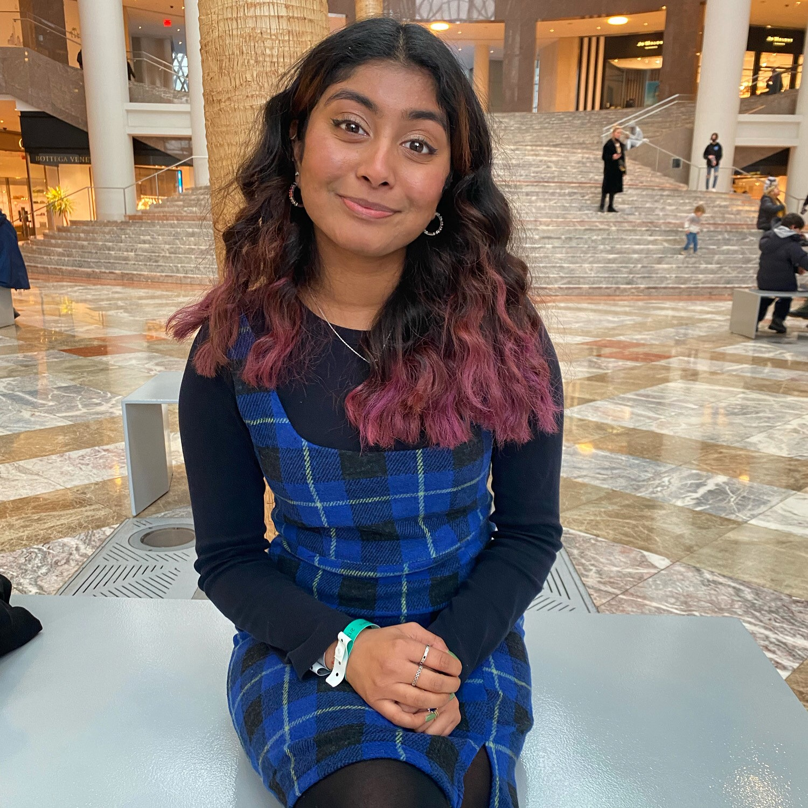
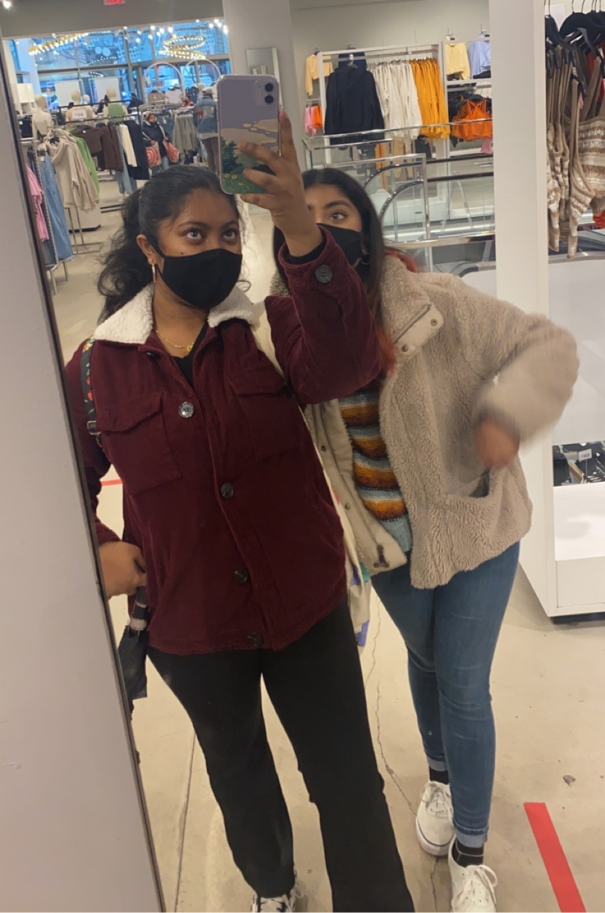
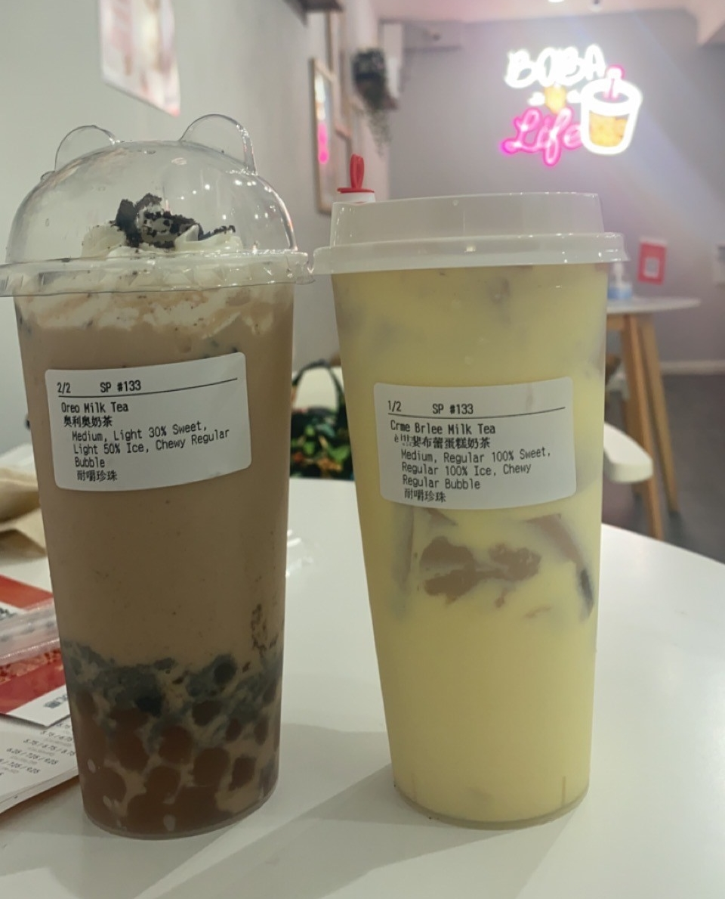
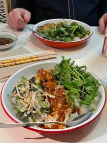

February 13th

On this day, Sharmin and I went to New York Fashion Week. It was a snowy/rainy day but we had to look good so we were freezing. I was on the 2 train and the plan was for Sharmin to hop on my train at Atlantic Avenue. The timing was perfect and it all worked out. She hopped on my train and had to transfer to the 1 train. Once we got there, we showed them our tickets and entered the show. To be honest, I was very confused and fashion is not exactly my cup of tea. We got cups of coffee that they were giving out and then continued on to the exhibits. The first exhibit was kind of like a video showing which I did not understand at all. The next exhibit was a bunch of mannequins wearing fashionable pieces like extravagant dresses, fluff, sparkles, etc. There was nothing else to see on that floor and when we asked, apparently that was the end of exhibit. Very wack, in my opinion. We took some photos, got some more coffee and left. It was still super cold but at least it wasn't snowing anymore. We walked to Brookfield Place and got food there. I got a noodle bowl and Sharmin got
pizza. We sat there, chilled and ate. Not too far was the Oculus. Sharmin had never been so we went inside. We didn't do any shopping but took the train from the Oculus which was Fulton street. We both took the 2 train and Sharmin transferred at her stop to go home. Overall, I was super uncomfortable at the fashion week exhibits because fashion is not my thing at all but it was fun to experience it and say that I went.
March 26th
Today Sharmin and I decided to do thrift shopping! I've been changing up my style and donating a lot of clothes so I was hoping to find a lot of cool finds today. We planned to go to Goodwill and meet up there. I was not impressed by their selection at all and there were barely any good finds. It was also expensive for a thrift store, it would be more worth it to go to an actual store and buy brand new clothes. We looked through all of the clothes and shoes and I only got one sweater that I was satisfied with. We did some more shopping at nearby stores like H&M and five below. Then we went to a restaurant to get lunch. It was around 4pm but they were still serving brunch which I found kind of weird.
We both got the same meal and we both weren't satisfied. To make up for it we went to Moge Tee for bubble tea. I got the oreo milk tea and Sharmin got the creme brulee milk tea. Both were very good. We sat there, drank our tea, and had some deep conversations. Then we walked around Macys and went to the train station to be on our way home. It was a nice chill day, even though I didn't a lot of clothes as I hoped, it was a good day with my bestie.
April 18th

On this day, my dad and I went to the auto show at Javits Center. It's been a tradition for us to go every year but due to covid, the last time we went was 2019. As usual, they did not disappoint and it was so much fun. I bought the tickets for both of us and my dad bought lunch. We got there at around 12 and our first stop was Nissan. The new Nissans are sooo sexy and we couldn't believe how much they upped their game. We also visited Ford, Toyota, Hyundai, Lincoln, Infinity, and much more. There were a lot freebies and competitions too so that was fun. When we were done, we went to a buffet place because that's our favorite. When I was younger, my dad and I would always go to buffet spots and eat all that we can. It felt nice to do it again. After that we walked to Penn Station and caught the train there. It was a really nice day where we relived all of our traditions again.
April 21st
This was during spring break so I worked from 9-2. It was a pretty chill and fast day at work. After work, Anthony met me there. We planned to go out for lunch and catch up on things. The last time we went out was when the school year started back in August. Every time we hang out, there's sooo much to talk about and this time was no different. He had restaurant in mind to go to but apparently they open at 4 so that was a no go. We walked along Park Avenue looking for somewhere to eat and decided to go to Milu. I had been there before so we new it was a safe bet. We got out food and got a seat and I kid you not, we didn't get up until like three hours passed. We talked about school, love lives, life in general, careers, family, and so much more. We never get a chance to talk when classes are in session and we are always super busy. So when we get the time to reconnect, it's so chaotic and fun. Once we left the restaurant, we went to Coco to get bubble tea. I tried taro for the first time and I don't think I would get it again, to be honest. He walked me to the train station, and I was on my way home. I had an amazing time hanging out with Anthony again.